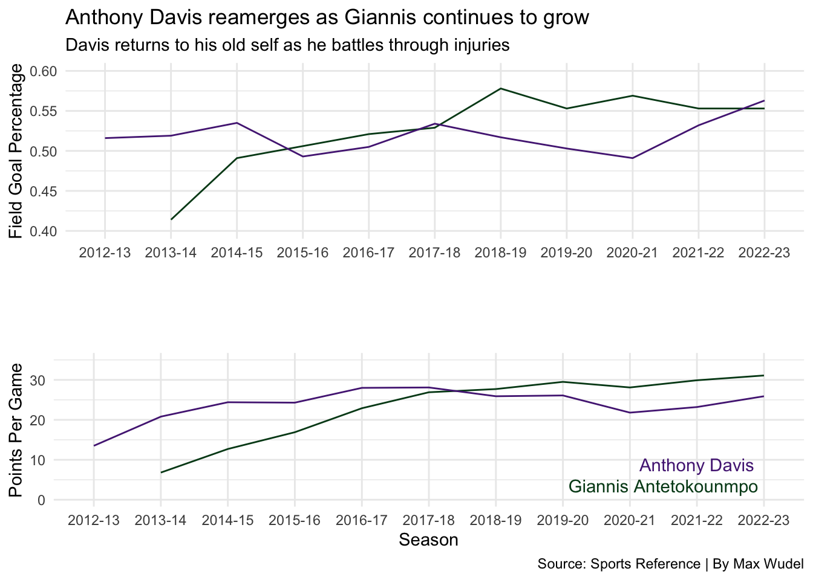

A Tale of Two Bigs; Giannis Antetokounmpo v. Anthony Davis
giannis
davis
analysis
Author
Max Wudel
Published
May 4, 2023
With Milwaukee eliminated from the 2022-23 playoffs, I am once again finding myself at the hands of my dear friends. Friends who unfortunately love to argue and discredit each other over their favorite sports teams and players. I have been at their mercy this entire year because my teams completely fell apart during the playoffs but I must trudge on. An argument I seem to always find myself in revolves around Anthony Davis and Giannis Antetokounmpo. I believe Giannis clears that argument with his two MVP’s and Finals MVP but to some that just isn’t enough. He still gets called “run and dunk boy” and they just cant see that he is clearly better than Anthony Day-To-Davis.
It is entirely possible however, that I am the one spreading misinformation. I have watched significantly less of Anthony Davis’s game and have only ever looked at a couple of his stats. I looked at how he wanted to be traded from New Orleans after multiple playoff exits and how he joined LeBron James in Los Angeles. Davis has always been considered a master of the mid-range and in his years with the Pelicans he was undoubtedly the single most dominant force around the paint. My favorable opinion of Davis has slowly faded as he began to suffer from nagging injuries which kept him off the court. Since the 2018-19 season, Davis has missed 160 out of the 410 possible games he could have played in. His inability to stay healthy resulted in a statistical decline and only served to weaken my opinion of him. During the 2022-23 season Davis has seen a statistical resurgence as he begins to get healthier and his numbers are starting to feel like they’re actually representing Anthony Davis.
The first thing were going to take a look at is how their points per game and field goal percentage has changed since they both joined the league. Anthony Davis entered the league in 2012 as the first overall pick in the NBA draft and already blew fans away with his talent. Giannis entered the league as the 15th overall pick in the 2013 draft and was primarily known for his impossible to pronounce last name. As a skinny and underdeveloped 19 year-old, few would have imagined that he would one day be considered as the best player in the NBA. This was just meant to be some light reading so lets take a look at some of the numbers.
Code
library(tidyverse)library(ggalt)library(ggrepel)library(cowplot)library(gt)gianniscareer <-read_csv("gianniscareer.csv")daviscareer <-read_csv("daviscareer.csv")advanced <-read_csv("advancedstats.csv") pergame <-read_csv("pergamestats.csv")ratings <-read_csv("ratings.csv")playoffs <-read_csv("playoffs.csv") %>%mutate(PlayoffRating = ((PTS *`FG%`) + AST + TRB) / ((TOV + PF)) ) %>%select( Player,G,PTS,PlayoffRating )%>%arrange(desc(PlayoffRating)) %>%ungroup() %>%top_n(10)line1 <-ggplot() +geom_line(data=gianniscareer, aes(x=Season, y=`FG%`, group= Lg), color="#00471B")+geom_line(data =daviscareer, aes(x=Season, y=`FG%`,group= Lg), color="#552583") +scale_y_continuous(limits =c(0.40, .60)) +labs(title="Anthony Davis reamerges as Giannis continues to grow ", subtitle ="Davis returns to his old self as he battles through injuries", x="", y="Field Goal Percentage") +theme(plot.title =element_text(size =16, face ="bold"),axis.title =element_text(size =5), plot.subtitle =element_text(size=10), panel.grid.minor =element_blank() ) +theme_minimal()line2 <-ggplot() +geom_line(data=gianniscareer, aes(x=Season, y=PTS, group= Lg), color="#00471B") +geom_line(data =daviscareer, aes(x=Season, y=PTS,group= Lg), color="#552583") +geom_text(aes(x=10, y=8.8, label="Anthony Davis"), color="#552583") +geom_text(aes(x=9.5, y=3.5, label="Giannis Antetokounmpo"), color="#00471B") +scale_y_continuous(limits =c(0,35)) +labs(title="", subtitle ="",caption="Source: Sports Reference | By Max Wudel",x="Season", y="Points Per Game") +theme(plot.title =element_text(size =16, face ="bold"),axis.title =element_text(size =5), plot.subtitle =element_text(size=10), panel.grid.minor =element_blank() ) +theme_minimal()plot_grid(line1,line2,ncol =1)

From 2017 to 2020, Davis has seen a decline in his field goal percentage and his points per game. This is largely due to his inability to stay on the court. As his health has improved these past two seasons, so have his numbers. Davis’s stats have been trending upwards as he set a new career high in field goal percentage this season at 56%. His points per game peaked in 2016 and 2017 and that’s when his New Orleans Pelicans were playing at their best. Injuries aside his points per game has likely decreased due to his new teammate pairing of LeBron James and the supporting cast that the Lakers seem to just pull out of a mystery bag. He simply doesn’t need to carry a failing franchise anymore.
On the other end is Giannis Antetokounmpo. He averaged just over six points per game his rookie season and finished the 2022-23 season as one of the minuscule number of players to average over 30 points per game. He was named the 2016-17 Most Improved Player as he made the transition to forward and raised his points per game from 17 to 23. He has continued to work and polish his game as his stats have steadily increased each season. Giannis’s field goal percentage has stagnated as he has shot 53% in three of the last four seasons. While Davis’s numbers have taken a step back over the last couple of years, Giannis’s numbers have matched that of one of the leagues best.
With Davis beginning to return to his normal self in the 2022-23 season, lets compare their usage percentage and how it relates to their points per game. We will compare their numbers to other power forwards and centers within the NBA and the data set will not include anyone who played less than 20 regular season games.
ggplot() +geom_point(data=advancedfinal, aes(x=`USG%`, y=PTS), color="lightgrey") +geom_point(data=giannis, aes(x=`USG%`, y=PTS), color="#00471B") +geom_point(data=davis, aes(x=`USG%`, y=PTS), color="#552583") +geom_smooth(data=advancedfinal, aes(x=`USG%`, y=PTS), method="lm") +scale_x_continuous(labels = scales::percent_format(scale =1),limits =c(5,40)) +geom_text_repel(data=theboys, aes(x=`USG%`, y=PTS, label=Player),size=3.5) +scale_y_continuous(limits =c(0,35)) +labs(x="Usage Percent", y="Points Per Game", title="Milwaukee runs through Giannis and only Giannis", subtitle="His usage rating led all players and propelled Milwaukee to the leagues best record", caption="Source: Sports Reference | By Max Wudel" ) +theme(plot.title =element_text(size =16, face ="bold"),axis.title =element_text(size =11),plot.subtitle =element_text(size =10),panel.grid.minor =element_blank(),plot.title.position ="plot" ) +theme_minimal()
Usage rating is a metric involving an estimate of the percentage of team plays used by a player while they were on the court. In the 2022-23 regular season, Giannis led all players with a usage rating of 38.8% and finished behind league MVP Joel Embiid in points per game. That meant that on any given possession, there was nearly a 40% chance that Giannis was going to initiate Milwaukee’s offense.
Anthony Davis finished with a usage rating of 28.4% which is actually the same as his career average. Davis’s usage rating peaked in 2016 at 32.6% but those numbers have stayed rather consistent. Davis finished in the top 10 for both usage rating and points per game when compared to other bigs and it marks his return to dominance.
Contrary to what the media might want you to think, there is far more to basektball than just scoring points. Especcialy when it comes to bigs. They are expected to be a commanding force on both the offensive and defensive side of the ball. Davis is a three time block champion and has been named to the NBA All Defense team four times in his career. Giannis was the 2019-20 Defensive Player of the Year and has been named to the NBA All Defense team five times in his career. Its safe to say that there arent many players that enjoy being defended by either of these players. Lets take a look at how their offensive and defensive ratings reflected their ammount of win shares.
Code
ratingsadvanced <-merge(advancedfinal,ratings,by="Player") %>%select(Player,Ortg,Drtg,WS)theboys2 <- ratingsadvanced %>%filter(Player =="Giannis Antetokounmpo"| Player =="Anthony Davis"| Player =="Joel Embiid")giannis <- theboys2 %>%filter(Player =="Giannis Antetokounmpo")davis <- theboys2 %>%filter(Player =="Anthony Davis")embiid <- theboys2 %>%filter(Player =="Joel Embiid")ggplot() +geom_point(data=ratingsadvanced, aes(x=Ortg, y=Drtg, size=WS), color="lightgrey", alpha=.5 ) +geom_point(data=giannis,aes(x=Ortg, y=Drtg, size=WS),color="#00471B" ) +geom_point(data=davis,aes(x=Ortg, y=Drtg, size=WS),color="#552583" ) +geom_point(data=embiid,aes(x=Ortg, y=Drtg, size=WS),color="#006BB6" ) +geom_vline(xintercept =119.7348) +geom_hline(yintercept =113.3035) +geom_text_repel(data=theboys2, aes(x=Ortg, y=Drtg, label=Player),nudge_y =1 ) +labs(title="Bigger isn't always better, ask a golfer", subtitle="Davis returned to form as he dominated the defensive paint", caption="Source: Sports Reference | By Max Wudel",x="Offensive Rating",y="Defensive Rating") +geom_text(aes(x=109, y=118, label="Bad Offense, Bad Defense"), color="blue") +geom_text(aes(x=131, y=104, label="Great Defense, Great Offense"), color="blue") +guides(size =guide_legend(override.aes =list(color ="black"))) +theme_minimal() +theme(plot.title =element_text(size =16, face ="bold"),axis.title =element_text(size =10), plot.subtitle =element_text(size=10), panel.grid.minor =element_blank() )
A win share is a statistic which tries to divvy up team success by giving credit to the individuals on that team. Essentially, it is a combination of how a players offensive and defensive play helps their team to either win or lose. The larger the number the better and the smaller the number becomes… lets just say that you might receive a phone call from the Shanghai Sharks. To put it in perspective, Kareem Abdul-Jabbar’s total of 25.4 Win Shares in 1971-72 is the all-time single-season record and his 273.4 career Win Shares are the all-time career record.
Joel Embiid was named the 2022-23 NBA MVP and I included him in this chart as a reference point. He was largely the most dominant player this season so I wanted to see how Giannis and Davis compared. Embiid finished with an offensive rating of 124 which is rather impressive given the workload he faces in Philadelphia. His defensive rating was 109 which slots him between Mitchell Robinson and DPOY runner up Brook Lopez. Embiid was credited with 12.3 win shares and you would expect that from the league MVP.
Giannis finished with an Ortg of 117 ,Drtg of 107.8, and was credited with 8.6 win shares. I would have expected his Ortg to be higher given his increased usage rating this season but his defensive rating remains elite. He finished in the top five of big men and his win shares are understandable when you consider the elevated role that Jrue Holiday took for Milwaukee this season.
Davis finished with an Ortg of 124, Drtg of 106.5 and was credited with 9 win shares. His defensive rating of 106.5 is the third best across the league and was certainly crucial for the Lakers to secure a spot in the playoffs. His offensive rating can be contributed to his increased efficiency this season as he saw a massive jump in his field goal percentage. His role as a closer for the Lakers has translated to some impressive stats
So far we have only looked at regular season stats so lets look at where it really matters, the Playoffs. Ive created a playoff rating score which tallies up points per game with field goal percentage then adds the players average rebounds and assists. That number is then divided by the combined turnovers and fouls a player averages and results in our playoff rating. We will take a look at how Giannis and Anthony Davis compare to other great power forwards and to the playoff legend himself, LeBron James.
Code
playoffs %>%gt() %>%cols_label(G ="Games",PTS ="Points Per Game",PlayoffRating ="Playoff Rating" ) %>%tab_header(title ="Lakers duo excells during the playoffs",subtitle ="Despite playing fewer games, LeBron could not have found a better teammate") %>%tab_style(style =cell_text(color ="black", weight ="bold", align ="left"),locations =cells_title("title") ) %>%tab_style(style =cell_text(color ="black", align ="left"),locations =cells_title("subtitle") ) %>%tab_source_note(source_note =md("**By:** Max Wudel | **Source:** [Sports Reference]") ) %>%fmt_number(columns = PlayoffRating, decimals =2 ) %>%tab_style(locations =cells_column_labels(columns =everything()),style =list(cell_borders(sides ="bottom", weight =px(4)),cell_text(weight ="bold", size=13) ) ) %>%opt_row_striping() %>%opt_table_lines("none") %>%tab_style(style =list(cell_fill(color ="#552583"),cell_text(color ="#FDB927") ),locations =cells_body(rows = Player =="Anthony Davis") ) %>%tab_style(style =list(cell_fill(color ="#00471B"),cell_text(color ="#EEE1C6") ),locations =cells_body(rows = Player =="Giannis Antetokounmpo") )
Lakers duo excells during the playoffs
Despite playing fewer games, LeBron could not have found a better teammate
Player
Games
Points Per Game
Playoff Rating
Anthony Davis
47
26.2
5.42
LeBron James
275
28.5
5.12
Dirk Nowitzki
145
25.3
4.74
Giannis Antetokounmpo
79
26.6
4.73
Tim Duncan
251
20.6
4.66
Charles Barkley
123
23.0
4.61
Kevin Garnett
143
18.0
4.19
Chris Bosh
89
15.6
4.15
Charles Oakley
144
10.8
3.03
Dennis Rodman
169
6.0
2.70
By: Max Wudel | Source: [Sports Reference]
When it comes to my playoff score, Anthony Davis leads some of the greatest power forwards of all time. However, it is difficult to asses how truthful that stat is when he by far has the smallest sample size of games. Regardless, his playoff numbers have been impressive and his play helped the Lakers win it all in 2020.
Giannis rests between two of the greatest to ever do it in Dirk Nowitzki and Tim Duncan. Duncan has the second most games played among this group but never had to face a workload like Giannis did offensively. That’s simply a testament to how great those Spurs teams where.
Playoff basketball is a whole new world to dive into and a separate piece would need to be made to fully analyze their playoff prowess. Take this with a grain of salt.
After looking at the stats these two players are far more similar than I had expected them to be. Their numbers are often comparable to one another. Giannis has taken the next step forward and began to leave Davis behind. Now that Davis is getting healthier his stats are beginning to trend towards the elite playstyle of the Anthony Davis we all grew to love in New Orleans. Davis is a master of the mid-range and commands his presence around the rim. Giannis flies around the court and does everything with a full head of steam. It may be impossible to determine who is actually better at the sport of basketball without a match up between them in the playoffs.